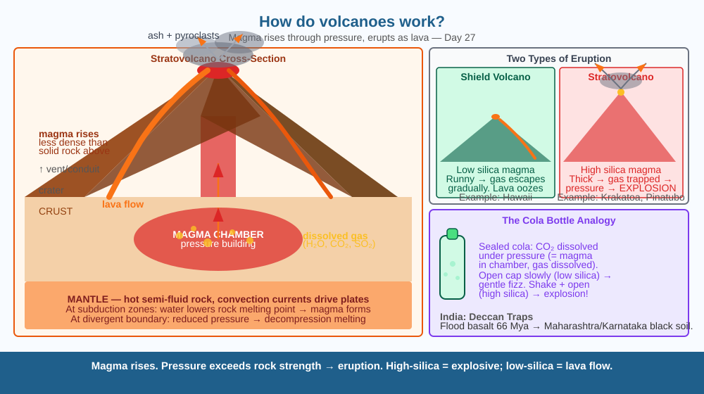

Discover why mountains explode — by tracing the journey of molten rock from deep inside the Earth to the surface, and understanding why some eruptions are gently oozing and others are catastrophically explosive.
Lava — molten rock at over 1,000°C — emerges from openings in the ground and flows for kilometres. But where does it come from? The ground around a volcano looks solid. How does liquid rock form inside a solid planet, and what makes it rise to the surface at just certain spots?
The interior of the Earth is layered: a solid inner core, liquid outer core, then a thick mantle of rock that is hot enough to flow slowly like very thick putty (but is mostly solid under normal conditions). Near the surface, where pressure is slightly lower and temperature is still high, rock melts into magma.
Why magma forms: - At subduction zones (where one plate dives under another), the descending plate carries water into the mantle. Water lowers the melting point of rock → rock melts → magma forms. - At divergent boundaries and hot spots, reduced pressure from plates pulling apart allows rock to melt even at the same temperature (decompression melting).
Why magma rises: Magma is less dense than the solid rock around it. Like oil floating on water, it rises through cracks and weak zones in the crust. It collects in a magma chamber — a reservoir several kilometres below the volcano. Pressure builds as more magma arrives and dissolved gases (water vapour, CO₂, SO₂) try to expand.
Eruption: When the pressure in the magma chamber exceeds the strength of the overlying rock, magma bursts through the vent. Once it reaches the surface, it is called lava.
Why some eruptions are explosive: Magma with high silica content is thick and viscous. Dissolved gases cannot escape gradually — pressure builds until the magma literally shatters and erupts explosively (like a shaken cola bottle). Low-silica magma is runny — gas escapes easily, lava oozes out calmly.
Think of a sealed bottle of fizzy cola. The dissolved CO₂ stays dissolved under pressure. Shake it (add energy), then open the cap (reduce pressure): the gas comes out explosively. Magma works the same way: dissolved gases stay dissolved underground under high pressure. When magma reaches the surface, the pressure drops suddenly — gas tries to escape — the magma froths and, for thick (high-silica) magma, explodes. Open the same cola slowly, tilted — the gas bubbles out gently. That is a runny Hawaiian lava flow.

The diagram shows a cross-section of a stratovolcano. Layers shown: mantle (hot, flowing), magma chamber in crust, conduit leading to vent, crater at summit. Labels: magma pressure arrows pointing up, dissolved gas bubbles shown in magma, lava flowing out at the top, pyroclastic fragments ejected. A comparison inset shows two volcano profiles: shield volcano (gentle slope, low-silica magma, effusive eruption) vs stratovolcano (steep cone, high-silica magma, explosive eruption).
Mix 2 tablespoons of baking soda into a cup. Add 1 tablespoon of dish soap. Now slowly pour in 3 tablespoons of vinegar. The CO₂ gas from the acid-base reaction fizzes the soap mixture upward — a simple model of gas-driven eruption. For a more dramatic effect: add red food colouring to the vinegar before pouring. Notice how the rate of pour (analogous to how fast pressure is applied) affects how violently it erupts.
Eruption prediction is one of the hardest problems in volcanology. Scientists monitor ground deformation (swelling of the volcano as magma fills the chamber), earthquake swarms (magma cracking rocks as it rises), changes in gas emissions, and temperature of crater lakes. Yet even with all these signals, the exact timing of an eruption is often impossible to predict more than days in advance. In 1985, scientists knew Nevado del Ruiz (Colombia) was dangerous — but officials delayed evacuation. A small eruption melted the ice cap, sending a mudflow (lahar) down the valley that buried the town of Armero, killing 25,000 people. What does this tell you about the difference between scientific knowledge and social decision-making in disaster response?
What is the main mechanism that causes a volcano to erupt?
Why is understanding magma pressure and plate tectonics more useful than knowing volcanoes release lava?
If pressure inside a volcano continued to build without any eruption for a very long time, what would you predict?
Mount Pinatubo (Philippines) erupted in 1991, releasing about 20 million tonnes of sulphur dioxide into the stratosphere. This formed a global haze of sulphate aerosols that reflected sunlight. Global average temperatures dropped by 0.5°C for 2 years. Using what you know about Rayleigh scattering (Day 24) and the greenhouse effect, explain why stratospheric aerosols cool the planet — and predict what would happen to plant growth globally in the year after Pinatubo's eruption.
Mars has the largest volcano in the solar system: Olympus Mons, 22 km high (nearly 3× the height of Everest) and 600 km wide. It formed because Mars has no moving tectonic plates — the hot spot (mantle plume) stayed fixed underneath the crust, piling up lava in the same spot for billions of years. On Earth, the hot spot under Hawaii has produced a chain of islands as the Pacific Plate moves over it (the oldest are now underwater seamounts). Mars = no plate movement = one giant mountain. Earth = plate movement = a chain of islands.
Magma forms where pressure drops or water lowers the melting point. Less dense than solid rock, it rises. When chamber pressure exceeds rock strength → eruption. High-silica magma is thick → explosive. Low-silica → gentle lava flow.